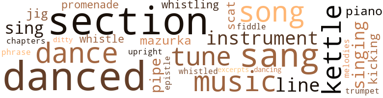
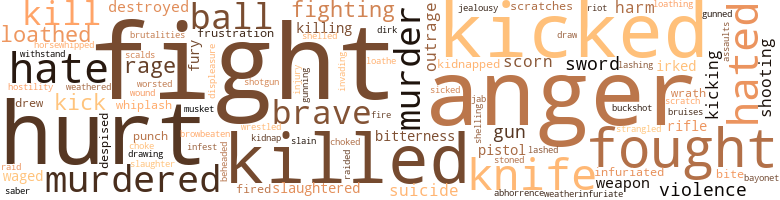

Over Edom, I Lost My Shoe, by Russ, George B. (1970)
110 music-related terms matched in this text.
Most frequent terms in this topic: danced (13); section (12); sang (9); music (6); dance (5)
chapter.n.01
Definition: a subdivision of a written work; usually numbered and titled
| word | sentence |
|---|---|
| chapters | There were times she recalled whole chapters in her own life , while Missus ran on and on at random . |
cornet.n.01
Definition: a brass musical instrument with a brilliant tone; has a narrow tube and a flared bell and is played by means of valves
| word | sentence |
|---|---|
| trumpet | He fingered the children 's trinkets : Ustane 's baby cup and spoons ; Lawrence Oliver 's wooden horse , a drum , a silver-plated trumpet , a dice box . |
dance.n.01
Definition: an artistic form of nonverbal communication
| word | sentence |
|---|---|
| dance | Al - though he had caused her much pain there had been an abun - dance of happiness which they had shared . |
| dances | Personally , he had never had so much ; he bought a ticket each evening to attend Aprokasina 's dances . |
dance.v.03
Definition: skip, leap, or move up and down or sideways
| word | sentence |
|---|---|
| danced | And he might not have noticed Aprokasina had she not danced the pas de chale . |
| danced | Her blonde hair was plaited into two huge braids and hung down her back , and she was transparently radiant with impulsive joy as she danced . |
| dance | Aprokasina had accepted his invitation to dance with a beaming smile . |
| danced | They had danced the e ' cassaise , the anglaise and the mazurka . |
| danced | They danced a dozen evenings be - fore she would listen to any expression from his lovesick heart . |
| danced | His words danced before her eyes long after he had stopped talking . |
| danced | The darkies crowded inside the doorways and clapped for the white folks who danced until they were breathless , then dropped upon chairs and the floor to rest . |
| danced | Mercy caught his Christmas spirit and danced around the room singing , " Good ole Santy Claus - jolly - good - old fe-low , " she sang . |
| danced | The serving girls danced about giggling and mimicking the lady guests . |
| danced | The children danced and sang ; round and round the cart they skipped while he packed their belongings . |
| dance | A man could get drunk , sleep with a whore , enjoy a fist fight , or dance all night . |
| dance | He was a great fiddler for others to dance , but the shoe was on the wrong foot when it was his time to dance . |
| dance | He was a great fiddler for others to dance , but the shoe was on the wrong foot when it was his time to dance . |
| danced | She sang and danced , told bawdy jokes and drank with any man if he were buying . |
| danced | The boys danced up and down , squealing like little black pigs . |
| danced | Every body was free and joy-crazy ; they sang , danced and boasted . |
| danced | She was all excitement ; she danced about like an orphan recently blessed with loving adoption parents who owned a candy store . |
| dancing | Boy and Boy-Boy were dancing up and down in the middle of the road . |
ditty.n.01
Definition: a short simple song (or the words of a poem intended to be sung)
| word | sentence |
|---|---|
| ditty | She sang a strange ditty ; " trouble , trouble , I ' se seed it all mah dees . " |
epistle.n.02
Definition: a book of the New Testament written in the form of a letter from an Apostle
| word | sentence |
|---|---|
| epistle | He had felt the man 's eyes fastened on him while he was reading the epistle . |
excerpt.n.01
Definition: a passage selected from a larger work
| word | sentence |
|---|---|
| excerpts | Grover slipped off his shoes and continued reading excerpts from the book . |
jig.n.01
Definition: music in three-four time for dancing a jig
| word | sentence |
|---|---|
| jig | Blue cut a few jig steps , flicked an imaginary parasite from the lapel of his immaculate canary-yellow satin livery . |
| jig | Signobie and Sue were teaching the other girls the latest jig steps . |
kettle.n.04
Definition: a large hemispherical brass or copper percussion instrument with a drumhead that can be tuned by adjusting the tension on it
| word | sentence |
|---|---|
| kettle | He knew , deep down some - where , that the pot could not call the kettle black but he did n't feel as callous about snuffing out another man 's life . |
| kettles | Jethro 's lithe body moved with the quick stealth of a lizzard ; he shifted the kettles of water upon the low , iron stove with the skill of a connoisseur . |
| kettles | The pungent odor of the lavender essence which Jethro stirred into the steaming kettles made him dizzy . |
| kettles | Moving his long legs , one of the copper kettles was upset and water spattered on the heater and ran over on the floor . |
| kettles | The joke was over the white attendant 's head ; however , the black boy who helped with the kettles , kept the fires going , mopped and handed the white attendant the things he needed to work with , flooded the place with laughter . |
kick.v.04
Definition: kick a leg up
| word | sentence |
|---|---|
| kicking | Sarah 's kicking legs speeded the log upon which her stomach rested so firmly that she was within a lew yards of the raft before it had moved very far in her direction . |
| kicking | Mercy began slapping and kicking like a black panther . |
mazurka.n.01
Definition: music composed for dancing the mazurka
| word | sentence |
|---|---|
| mazurka | They had danced the e ' cassaise , the anglaise and the mazurka . |
| mazurka | " What sort of Polish mazurka is this ? " the wheezy , old , mili - tary toad asked , leaning on his saber and beating time with his foot . |
music.n.01
Definition: an artistic form of auditory communication incorporating instrumental or vocal tones in a structured and continuous manner
| word | sentence |
|---|---|
| music | The muffled strains of jungle music and darky laughter and shuffling feet met her ears . |
| music | At the right beat of the music , he had looked sideways at his alluring , petite partner with a triumphant air , and suddenly he stamped with one foot , bounded from the floor like a ball , and flew ' round the room , taking his seductress with him . |
| music | The house echoed with music and boisterous laughter . |
| music | Skirt - ing the front hall where the music and dancing were going on , she entered the kitchen with her eyes searching for something the girls had left undone . |
| music | While we were in Philadelphia , we met a Miss Pollyana Gibbs , a teacher of music at the Hansel and Gretchel School of Music in the city of brotherly love . |
| music | He is willing to take the operation , but Jonathan knows that Father Time is begin - ning to play funeral music for him . |
musical_instrument.n.01
Definition: any of various devices or contrivances that can be used to produce musical tones or sounds
| word | sentence |
|---|---|
| instrument | He was an instrument through which evil forces thrived . |
| instrument | Each night this bastard prays that he will meet a mad Boer with a bayonet who will find his heart with the blade of the instrument and puncture his heart . |
| instruments | The cards arrested her attention because she had always been told that cards were instruments of the devil . |
| instruments | And nearly every morning when she slid out of bed , she went straight to the peephole to see if the devil 's instruments were doing any sort of devil - ment . |
| instrument | The instrument landed in the right eye of a pig , with red , black , green and yellow stripes around his belly . |
phrase.n.02
Definition: a short musical passage
| word | sentence |
|---|---|
| phrase | Scott turned the phrase over in his mouth distastefully . |
piano.n.01
Definition: a keyboard instrument that is played by depressing keys that cause hammers to strike tuned strings and produce sounds
| word | sentence |
|---|---|
| piano | Aside from being bathed in tears , she was lavished with gifts that were so plentiful and great in size that they had to be carted off months later when she had space for them : a pair of richly gilt Louis Quatorze candlesticks , six gilt albums , keepsakes , books of beauty , a gold enameled Madame Du Parry snuffbox , sweetest little ink stand and a mother-of-pearl blotting book , fire irons , chimney glasses , and a rosewood cottage piano ; sugar loaf buttons , a cream dish , and a white cashmere dressing gown . |
| piano | He sat staring absently at the mass of red-brick warehouses bordering long ships which gave the harbor the appearance of a piano . |
pipe.n.04
Definition: a tubular wind instrument
| word | sentence |
|---|---|
| pipe | George Cameron jabbed the short-stemmed pipe between his teeth to abate his flaring temper . |
| pipe | The pipe , like Shelton , was a new fixture . |
| pipe | Rev. Clarke smoked his pipe . |
promenade.n.01
Definition: a formal ball held for a school class toward the end of the academic year
| word | sentence |
|---|---|
| promenade | He was one of the handsomest men on the promenade . |
| promenade | They did not join the after - noon strollers in their promenade through the " fashionable burying ground . " |
scat.n.01
Definition: singing jazz; the singer substitutes nonsense syllables for the words of the song and tries to sound like a musical instrument
| word | sentence |
|---|---|
| scat | " Naw , sonny , yer eatcha kake 'n scat . " |
| scat | " You 'd bettah scat , black boy . |
section.n.01
Definition: a self-contained part of a larger composition (written or musical)
| word | sentence |
|---|---|
| section | The men took care of this section on great occasions ; Jake as butler while Blue and several other men served as footmen . |
| section | This section was airtight . |
| section | Her experience in a Boston school and in neighboring towns was not an easy one ; therefore , she did not expect to find a half - civilized section anything less than barbarous . |
| section | Avoiding the squalor of the Negro section , they found joy in just looking . |
| section | Truly , he worked in this section hut this was Sunday and he was not due on the job until Wednesday . |
| section | In this section , between Fourteenth Street and Twenty-Third Street , he found a clump of trees , an acre or more . |
| section | " There are certain political factions in this section that may rudely upset our plans . |
| section | She chose this section often because there was a good-looking black man who flirted with her every time she passed the place where Trinity Church was being built . |
| section | " I am one of four operators in this section . |
| section | Mr. Daniels was a Godsend to the Movement in this section since Mercy 's departure from Freeman Acres . |
| section | Crossing the room to where the preacher sat , he cupped his square chin inside his small hand ; " In all fairness to the holders , I am mindful that all parts of the country share in the responsibility for slavery , either as importers , sellers , buyers ; and no section has a right to lay the blame on any other . |
| section | The whole fourth ward section mobbed the Whigs Club on High Street , and I was caught up between the two snarling factions . |
sing.v.02
Definition: produce tones with the voice
| word | sentence |
|---|---|
| sang | '' Amen ! " they sang in concert , running like animals toward the gleaming water . |
| sang | Behind them , rifles sang in the soft wind . |
| sing | Maryapper and Anna Willa taught her how to read and write , but she taught them to sing , paint and embroider . |
| sang | Then in the flickering light , everyone sang the loved old songs ; Aprokasina 's beautiful voice floated high above the others ; Marcus Augustus Ill 's melodic tenor sparkled next to Colonel 's rich baritone . |
| sang | Mercy caught his Christmas spirit and danced around the room singing , " Good ole Santy Claus - jolly - good - old fe-low , " she sang . |
| sang | The children danced and sang ; round and round the cart they skipped while he packed their belongings . |
| sing | Some por - tions of the sky were of a softened lilac color , others were hues of lemon and orange ; the night birds had begun to sing ; strange sounds issued from the woods and from within the coach where a dozen or more kegs of blasting powder were pinned down . |
| sing | He could speak like angels , sing like birds but it was all mean - ingless . |
| sing | I often drift off to sleep while listening to a darky sing - ing . |
| sang | She sang and danced , told bawdy jokes and drank with any man if he were buying . |
| sang | Every body was free and joy-crazy ; they sang , danced and boasted . |
| sang | They ate raw sweet potatoes , swore like angry slave-catchers , sang , and told bawdy jokes . |
| sang | She sang a strange ditty ; " trouble , trouble , I ' se seed it all mah dees . " |
singing.n.01
Definition: the act of singing vocal music
| word | sentence |
|---|---|
| singing | When they had switched through the kitchen door , headed for the quarters with a gala song on their lips , she closed the door to shut out the noise of the barking dogs and singing darkies . |
| singing | His first offense occurred on Christmas Eve when he and a group of farmers went through the streets of London singing , " Vive la France ! |
| singing | Mercy caught his Christmas spirit and danced around the room singing , " Good ole Santy Claus - jolly - good - old fe-low , " she sang . |
| singing | " Shoe , come back to me " Then she began singing , " Somewhere over Edom , I lost my shoe - somewhere over Edom , I lost my shoe . " |
song.n.01
Definition: a short musical composition with words
| word | sentence |
|---|---|
| song | When they had switched through the kitchen door , headed for the quarters with a gala song on their lips , she closed the door to shut out the noise of the barking dogs and singing darkies . |
| songs | Then in the flickering light , everyone sang the loved old songs ; Aprokasina 's beautiful voice floated high above the others ; Marcus Augustus Ill 's melodic tenor sparkled next to Colonel 's rich baritone . |
| song | A terrifying fear gripped him on these days and he shrank from all that he usually admired : the flapping wings of the eagle that fascinated him on better days ; the marsh hens ; the blinking owl ; the hateful mock - ingbirds ; the sudden flight of a flock of partridges ; the caw-caws of the black crows ; the mournful song of the turtledoves . |
| song | If he were in no mood for rhyme and song , he sat for hours counting the gray-granite , red-brick store houses by the docks : drawing mental pictures of what the great and small boxes contained that were unloaded from the huge steamers that cast shadows upon the tugs closely flanked on each side by barges , the hay boats ; the belated lamplighters . |
| songs | Strange - heartrending songs . |
| songs | The songs of freedom soon lost their savor , and long before sundown most of the crusaders had turned back . |
tune.n.01
Definition: a succession of notes forming a distinctive sequence
| word | sentence |
|---|---|
| tune | All that was left for her to do was shake her head sadly , and repeat over and over in a singsong tune , " Kernal is much too good for dat ' oman . |
| tune | Mercy left the fluttering woman and began humming a tune that was off key . |
| lines | He had helped shape the course of this U.G.R.R. Mark began at the head streams of James River and let his finger trace the fine lines of red to the Greenbrier , tributary of Kanowha and the rugged portal opening to the same river to the Tug Fork of the big Sandy River by the deep canyon of the New River . |
| tune | It was that awful feeling of always listening for his footsteps upon the stairs ; of fancying she heard him whistling some well - known tune around the house ; of waiting against her clearer judgment , and , as though , she had not changed the course of things herself , wanting to hear his voice calling to her to come out of her room to look at a new variety of fruit trees , berry bushes , or vines that he had ordered ; of trying to forget how hateful she had always been to him . |
| tune | Lifting her shabby skirts , she skipped toward the house , hum - ming a sweet old tune whose words had long ago slipped from her memory . |
| line | The first line I ever read perfectly was , " Undertake not what you can not perform , but be careful to keep your promise , ' Colonel had given me a small leather-bound book to study for five minutes each night before going to bed - George Washington 's Rules of Behavior . |
| melodies | The ruffled grouse , as if filled with a sense of his responsible position in having to put in the bass notes of the lazy summer 's melodies , rescued the atmosphere of the evening from the clutches of great sorrow . |
| tune | Here the ringing of the hammer and the anvil reminded them of the '' Anvil Chorus " composed by Verdi ; a tune played by beating a great iron anvil - all in harmony . |
| line | This line of thinking lulled George to sleep . |
| line | She is a bit ornery at limes but Mrs. August keeps everyone in line . " |
| line | When she jerked the boys out of line , Jake yelled to her , " Whut do you want , Miss heifer dust ? |
upright.n.02
Definition: a piano with a vertical sounding board
| word | sentence |
|---|---|
| upright | Mercy jerked her body upright in bed . |
violin.n.01
Definition: bowed stringed instrument that is the highest member of the violin family; this instrument has four strings and a hollow body and an unfretted fingerboard and is played with a bow
| word | sentence |
|---|---|
| fiddle | " Only a fool will fiddle while the saints go marching in fat and free . |
whistle.n.01
Definition: the sound made by something moving rapidly or by steam coming out of a small aperture
| word | sentence |
|---|---|
| whistling | His curiosity did not haggle long before the ferryboat arrived with its shrill whistling , ringing of bells , fuss and flurry . |
whistle.v.01
Definition: make whistling sounds
| word | sentence |
|---|---|
| whistled | Jake pushed two fingers under his tongue and whistled loudly . |
| whistling | It was that awful feeling of always listening for his footsteps upon the stairs ; of fancying she heard him whistling some well - known tune around the house ; of waiting against her clearer judgment , and , as though , she had not changed the course of things herself , wanting to hear his voice calling to her to come out of her room to look at a new variety of fruit trees , berry bushes , or vines that he had ordered ; of trying to forget how hateful she had always been to him . |
| whistle | Her ears cocked each time the whistle wailed away over the marshes . |
| whistle | A jet of steam followed each whistle starboard from the standpipes , and the smoke rolled backward from the trim smokestacks topped with prim lace of painted iron ruffs . |
326 violence-related terms matched in this text.
Most frequent terms in this topic: fight (26); anger (19); hurt (18); kicked (13); killed (11)
abhor.v.01
Definition: find repugnant
| word | sentence |
|---|---|
| loathed | Her husband had caught her indulging in her favorite daydreams and she loathed being spied on . |
| loathed | Mercy crossed the room to where the rushlight burned ; she loathed the smell of whale oil and made a wish every day for Missus to stop using these lights entirely . |
| loathed | I have always loathed these long jaunts with you . " |
| loathed | Jake knew what it was he wanted most but he loathed hav - ing to struggle so long for it . |
| loathe | I loathe eating alone . " |
| loathed | He loathed idle men and bawdy women . |
| loathed | Why should she destroy this masterpiece simply because she loathed the Camerons ? |
abhorrence.n.01
Definition: hate coupled with disgust
| word | sentence |
|---|---|
| abhorrence | Shelton tried to quell his abhorrence of Jethro . |
| loathing | He was not able to shut out his own despon - dency nor diminish his loathing of the darky . |
abrasion.n.01
Definition: an abraded area where the skin is torn or worn off
| word | sentence |
|---|---|
| scratch | She could cuss , scratch , bite and kick at the same time . |
| scratches | His face had been pushed into a clump of something with thorns which left his face in a mass of bruises and scratches . |
| scratches | The more one scratches you , the more you itch . " |
anger.n.01
Definition: a strong emotion; a feeling that is oriented toward some real or supposed grievance
| word | sentence |
|---|---|
| anger | Mercy trembled with anger . |
| anger | He was quick to anger and quick to laughter . |
| anger | After this ceremony he settled comfortably into the sticky leather seat , to let his anger simmer . |
| anger | " You look glamorous this evening , " Nancy said , feeling proud of the sparkling note that sounded in her voice because it out - shone the anger that had risen inside her . |
| anger | Mercy tried to quell the anger that surged up and down her spine . |
| anger | Her anger ceased to flare at once . |
| anger | Maude stood watching the retreating figure with mounting anger . |
| anger | The man was slow to anger ; slow to rise from bed in the mornings ; slow to compre - hend little things . |
| anger | Mercy 's voice carried traces of anger . |
| anger | His own anger had blinded him to all else but the hide of his wife 's assailant . |
| anger | She grew sick with anger . |
| anger | Blinding anger swept her when she saw Thomas cuffing her friend . |
| Anger | Anger flared up inside Rev. Clarke ; blinding , bloodcurdling . |
| anger | Shelton said nothing ; however , his anger was easy to recog - nize in his flaring nostrils . |
| anger | How - ever , her patience was n't as enduring as Cora 's nor was she as slow to anger . |
| anger | Quickly his anger diminished and in its place livid fear swept over him . |
| anger | His emotions were a mixture of sorrow and anger for this woman whose face was plastered with red paint like a coach wheel after years of seasonal paintings . |
| anger | Dr. Adams straightened his shoulders , tightened his quiver - ing lips that were burning with anger . |
| anger | Her feelings were a strange mixture of anger joy and hate . |
| anger | Mercy 's anger lifted fast as the boy began breaking the strings . |
bayonet.n.01
Definition: a knife that can be fixed to the end of a rifle and used as a weapon
| word | sentence |
|---|---|
| bayonet | Each night this bastard prays that he will meet a mad Boer with a bayonet who will find his heart with the blade of the instrument and puncture his heart . |
bird_shot.n.01
Definition: small lead shot for shotgun shells
| word | sentence |
|---|---|
| buckshot | Mercy spent the remainder of the daylight hours picking buckshot out of Bertha 's rump , A week later , Bertha announced that she was going to the pen . |
blast.v.03
Definition: use explosives on
| word | sentence |
|---|---|
| shelled | The slabs beneath the open chest for holding the shelled corn were mov - able . |
| shelling | Besides , I do n't accidentally stumble foreigners and begin shelling out anything . |
bruise.n.01
Definition: an injury that doesn't break the skin but results in some discoloration
| word | sentence |
|---|---|
| bruises | His face had been pushed into a clump of something with thorns which left his face in a mass of bruises and scratches . |
butcher.v.01
Definition: kill (animals) usually for food consumption
| word | sentence |
|---|---|
| slaughtered | They burned barns , chased the horses off the place , chickens and hogs slaughtered ; bags of feed were emptied into the well along with barrels of flour and molasses ; bales of cotton were destroyed ; they beat the dogs that were chained , stoned the house and threatened to burn it . |
| slaughtered | At this point - they were near the city - folk were saying that Scott Lawrence had been murdered ; he and a dozen others had been slaughtered by a woman name Flossie . |
| slaughtered | She had known wild , rugged adventure for five years and had learned to love it with the same zeal that the wild beast had known before she had slaughtered it in time to save her own hide . |
contemn.v.01
Definition: look down on with disdain
| word | sentence |
|---|---|
| scorn | Moving her eyes away from this pretty child , she looked down with scorn upon the Dutch pot . |
| despised | She pitied and almost despised him at the same time . |
| despised | He was learning slowly , but he despised his teachers . |
| scorn | The sardonic grin vanished and he sat watching Mark through scorn - ing eyes . |
| scorn | Mercy eyed these comrades with scorn , pity and pride . |
decapitate.v.01
Definition: cut the head of
| word | sentence |
|---|---|
| beheaded | Poor Thomas was beheaded , imagine , three days after our arrival . |
defy.v.01
Definition: resist or confront with resistance
| word | sentence |
|---|---|
| withstand | The joy of having done so gave him additional strength to withstand the ravages that Mercy was going to do to his body . |
destroy.v.04
Definition: put (an animal) to death
| word | sentence |
|---|---|
| destroyed | Mercy had destroyed one of her most sacred possessions . |
| destroyed | They burned barns , chased the horses off the place , chickens and hogs slaughtered ; bags of feed were emptied into the well along with barrels of flour and molasses ; bales of cotton were destroyed ; they beat the dogs that were chained , stoned the house and threatened to burn it . |
| destroyed | The man seemed to forget that the printing press had been destroyed while Mark was scour - ing the country with Scott Lawrence . |
dirk.n.01
Definition: a relatively long dagger with a straight blade
| word | sentence |
|---|---|
| dirk | The blade of his dirk was razor sharp . |
displeasure.n.01
Definition: the feeling of being displeased or annoyed or dissatisfied with someone or something
| word | sentence |
|---|---|
| displeasure | Flossie 's coming here was the worst setback that it had been his displeasure to witness . |
draw.v.23
Definition: pull (a person) apart with four horses tied to his extremities, so as to execute him
| word | sentence |
|---|---|
| drew | At last , smartly whirling the wisp of a girl ' round in front of one of the tiny , metal chairs , he drew up with a click of the spurs of his new Hessian boots , and bowed to her . |
| drawing | During the past months , he had been busy organizing a housing unit for the Negro refugees , and drawing up plans for a new route to Canada . |
| draw | Secondly , they were to draw maps for a brand-new underground railroad to Canada . |
| drew | Mercy drew up closer to Earnest . |
engage.v.07
Definition: carry on (wars, battles, or campaigns)
| word | sentence |
|---|---|
| waged | In her struggle - that fearful conflict that waged in her heart night and day - the desire was not so much to resign herself to Daddy 's absence as to realize his sudden death . |
| waged | His guts had waged a war on each other and he spat furiously . |
| waged | In the election of 1824 , the aristocracy waged its last success - ful skirmish - the election of John Adams . |
ferociousness.n.01
Definition: the trait of extreme cruelty
| word | sentence |
|---|---|
| brutalities | Then , he had related a long narrative of how Mercy Amanda Freeman had banded together a hun - dred or more trusting black men , women and children and led them as far as Washington , D. C. , where she exposed them to all sorts of brutalities . |
fight.n.05
Definition: a boxing or wrestling match
| word | sentence |
|---|---|
| fight | The fight for first-class citizenship was like a burning coal inside her bosom . |
| fight | The fight she had fought against death during the night was etched upon the leafless plants . |
| fight | Cleo had staged a desperate fight against death , but the poison of some reptile had been stronger than her will to live . |
| fight | After awhile , the blacks started a fight . |
| fight | The fight was not mentioned again . |
| fight | Jerking her body off the bed , she was ready for a fight . |
| fight | Hodge and his hand-picked army of men worked hard get - ting things ready for the fight for liberty - the black man 's freedom . |
| fight | She did not fear man or beast ; she feared the open road to adventure - the urge to hunt , fight and steal that often called to her . |
| fight | His desperate fight had been useless . |
| fight | Lena , the housekeeper , told her a confused story about a fight Nancy and Doctor Adams had had a few days ago . |
| fight | For the present time , the fight for freedom was enshrouded in blackness . |
| fight | The fight for freedom must not be left to the chances of outmoded logic . |
| fight | The Cause - the fight for the black man 's freedom - was the depth of his being . |
| fight | Then , her neck snapped and all the fight left her . |
| fight | Jake spoke his cold sober mind knowing that he was asking for a fight from Mercy . |
| fight | He was no longer a backward foolish man groping in the dark , ignoring truth , yet he was a broken man no longer able to fight any kind of fight with the expectation of winning . |
| fight | A man could get drunk , sleep with a whore , enjoy a fist fight , or dance all night . |
| fight | The magnificent carriage circling the Battery - Thomas grinning down upon her and Earnest - the bloody fight - Thomas ' head rolling toward the fence where the little deer stood - the ugly grin on his lips - the flight of the white men - the cross-country flight with Earnest beside her , helpless as a child . |
| fight | He started a fight every day and she had to finish it . |
| fight | She had told Lena all about the fight she had had with Dr. Adams . |
| fight | Marcus ' pride was dampened a little by the carryings on of Mr. Lawrence ; however , he planned to give him a good fight in behalf of Shelton Beaurpos . |
| fight | He wanted me to play rooster fight 'n because I would not he called me ugly names 'n ran me into the woods . " |
fight.v.02
Definition: fight against or resist strongly
| word | sentence |
|---|---|
| fought | Thirza , as transparently radiant as her mother , had never known the tender love of her mother who fought so hard to live with her children . |
| fighting | McDuffie had never impressed her as being more than just another individual fighting the Freedom Cause ; a robot was just as handsome . |
| fight | She wanted to cry , to fight , to scream . |
| fought | They had fought starvation and the rattler in the pale dusty short grass in the Rocky Mountains . |
| fought | The fight she had fought against death during the night was etched upon the leafless plants . |
| fought | Clutching the little Dutch Teapot tightly against her pounding breast , Maude fought back burning tears . |
| fought | Maggie had fought hard to live but her tired , weary body refused to shoulder another hardship . |
| fought | Howbeit , he could not sin against the cause he had fought so hard for so long - the freedom for all the Negroes willing to trust him . |
| fought | She fought desperately for a moment . |
| fought | He fought with the fury of a mountain cat in a dogfight . |
| fight | He was no longer a backward foolish man groping in the dark , ignoring truth , yet he was a broken man no longer able to fight any kind of fight with the expectation of winning . |
| fight | Savannah was ready to fight for what her sister-in-law wanted . |
| fought | The black men had fought under General Washington . |
| fighting | She turned on them and began fighting like a wild tigress . |
| fighting | The men began fighting amongst themselves . |
| fought | The mass of sweaty , cussing humanity fought and pushed until it became entangled with the spars of square-riggers along the waterfront . |
| fighting | The noise of chirping , hungry baby birds and fighting , swearing parents ; the fetid , steaming heat rising from the earth ; the flapping and gobbling of wild turkeys ; the piercing screams of ducklings and the cross retorts of their sleepy parents ; the blood - curdling sound of snapping alligators ' teeth reminded the women more forcefully of the awful dangers of the swamps . |
| fighting | She was lost for words and fighting mad . |
| fighting | Boy and Boy-Boy began fighting in their sleep . |
| fight | She was n't lazy ; she wanted to be a part of the wide open spaces again where she might fight against the ravages of men and beasts , or enjoy splashing her tired , sore feet in the muddy stream of a river or branch . |
| fought | She fought this awful feeling down . |
frustration.n.03
Definition: a feeling of annoyance at being hindered or criticized
| word | sentence |
|---|---|
| frustration | Twisted with pain and emotional frustration . |
| frustration | He en - joyed the otherman 's frustration . |
fury.n.01
Definition: a feeling of intense anger
| word | sentence |
|---|---|
| rage | The rage was for white bed coverings these days but she had wanted something colorful and cheerful . |
| rage | She had sat up in bed , her pale face livid with rage . |
| rage | The pursuit of happiness and personal liberty had not dawned upon her , although Rufus Hodge had preached this ideal until he was hoarse from rage . |
| rage | His face became livid with rage and his eyes glared like a wildcat 's . |
| rage | His face was purple with rage but his soft voice carried no traces of contempt . |
| fury | He fought with the fury of a mountain cat in a dogfight . |
| rage | He left the room in a feverish rage . |
| fury | A flaming fury gripped him . |
| fury | The fury of the flames tangled with the morning breeze and spat long tongues of flame at the spectators . |
gag.v.06
Definition: cause to retch or choke
| word | sentence |
|---|---|
| choke | Shelton was getting hot under the neckcloth now and his fingers grappled at the Dutch linen which threatened to choke him to death . |
| choked | I am choked by niggers all night . |
gall.v.02
Definition: irritate or vex
| word | sentence |
|---|---|
| irked | And she had hinted more times than a dozen of how depraved she had been during her childhood ; of how poverty irked her and her sickly and nervous ; that , she was weak and needed the services of more slaves than they had now . |
| irked | The voice was familiar and it irked him . |
| irked | His dislike for not being able to make quick , accurate decisions always irked him . |
gun.n.01
Definition: a weapon that discharges a missile at high velocity (especially from a metal tube or barrel)
| word | sentence |
|---|---|
| guns | The Indians had an amply supply of the best British glazed powder , and some of their guns had been sent them so short a time before the action that they were not divested of the lists coverings in which they were imported . " |
| guns | Watching the lines of the hills , he was struck by a new realization ; the lines of those hills were made for the emplacement of guns ; the roaring waters challenged the skills of men - the white man , the red man , the yellow , and the black man . |
| guns | Mark kept ammunition stored on the third floor ; guns , pistols , blasting powder and shells . |
| gun | " If Missus ever git round ter asking me what I tends ter do , ah 'm puttin ' her in front of de gun . " |
gun.v.01
Definition: shoot with a gun
| word | sentence |
|---|---|
| gunned | I was nearly gunned down before I ran in here . " |
| gunning | " Count your friends ; your enemies do n't go about gunning for your guts . " |
harm.v.01
Definition: cause or do harm to
| word | sentence |
|---|---|
| harm | He would not dare harm his finery . |
hate.n.01
Definition: the emotion of intense dislike; a feeling of dislike so strong that it demands action
| word | sentence |
|---|---|
| hate | Missus hates the ground you walks on but dere ain ' much in dis world dat she doan hate . " |
| hate | Without the protection of the organization , he would last as long as hate would last in heaven . |
| hate | This fact he knew from daily experiences with men ; bitter with hate ; greedy for more power ; angry with whomever or whatever threatened their progress . |
| hate | Her feelings were a strange mixture of anger joy and hate . |
hate.v.01
Definition: dislike intensely; feel antipathy or aversion towards
| word | sentence |
|---|---|
| hates | Missus hates the ground you walks on but dere ain ' much in dis world dat she doan hate . " |
| hated | Rufus hated slavery , and preached liberty . |
| hated | Her own life did n't mean a thing or busting her brains out against the butt of a tree to escape what she hated , if that were the only way out . |
| hated | She hated them because they were so stingy with in - formation . |
| hate | I do n't hate him but I carry no goodwill for the two-cent magician . " |
| hated | She hated the waste of time ; sitting here inside this rickety old coach was maddening . |
| hate | She knew it was stupid of her to dislike what is true , but she did hate that truth . |
| hated | He hated the whole gol-durn pack of traders and kidnappers . |
| hated | She hated the vast sprawling city with its crowded streets , its indifference to strangers , its many races and strange tongues . |
| hate | She did n't hate the man ; he was like salt which has lost its savor . |
| hates | " Someone hates my guts , Mr. Reeves . |
| hated | They hated the slaves and worked overtime figuring out ways to have more punishments inflicted upon their backs . |
| hated | He hated needless uprisings . |
| hated | No , he did not like to see this town like this , and most of all , he hated the reason for the gloom . |
| hated | She hated the baby ; Edom be - came repulsive and overbearing . |
| hate | " I hate you , Mac " she hissed . |
horsewhip.v.01
Definition: whip with a whip intended for horses
| word | sentence |
|---|---|
| horsewhipped | George Cameron should have horsewhipped her then and there . |
hostility.n.01
Definition: a hostile (very unfriendly) disposition
| word | sentence |
|---|---|
| hostility | The open hostility which existed between trader and Negro sympathizers alone was enough to silence him . |
hurt.v.04
Definition: cause damage or affect negatively
| word | sentence |
|---|---|
| hurt | The glare hurt her eyes but she felt good inside . |
indignation.n.01
Definition: a feeling of righteous anger
| word | sentence |
|---|---|
| outrages | His message of June 1 , 1812 reviewed the outrages of the British in stopping our ships , seizing our seamen , inciting the Indians against our borders , blockading our ports , and refusing to repeal the ob - noxious Orders in Council . |
| outrage | Sarah , she was sure , could have saved herself a great deal of outrage . |
| outrage | The pangs of remorse gnawed at his insides from time to time but he had never voiced outrage , pro or con . |
infest.v.01
Definition: invade in great numbers
| word | sentence |
|---|---|
| infest | " It seems to me that you have more than enough to keep you happy for a long time without the cares that infest the business world . " |
infuriate.v.01
Definition: make furious
| word | sentence |
|---|---|
| infuriated | Colonel blew through his nose like an infuriated bull , and he paced the length of the room like a newly caged animal . |
| infuriate | An answer like that would infuriate Scott Lawrence . |
| infuriated | The insult infuriated him and he sat up in bed swearing angrily . |
injury.n.01
Definition: any physical damage to the body caused by violence or accident or fracture etc.
| word | sentence |
|---|---|
| injury | To humiliation , McDuffie had added injury . |
| harm | Nuttin ' you do will do me any harm . " |
| hurt | She left a little hurt and no amount of trying to shake ofE the pangs of hurt did any good . |
| hurt | She left a little hurt and no amount of trying to shake ofE the pangs of hurt did any good . |
| hurt | If she cussed his black hide for drinking too much home brew , she did little kindnesses to soothe his hurt feelings . |
| hurt | But there were times she wanted to see Jake so badly that her body hurt like a toothache . |
| hurt | This indifference hurt Bishop 's pride . |
| hurt | The man of God had never felt so belittled , yet he was more stunned than hurt . |
| hurt | A hurt old fool is a pathetic sight to behold . " |
| harm | Uncle William did no harm to anyone . |
| hurt | Passive resistance , on the other hand , is a morbid laxity which saps the victim slowly - there is the fever of anxiety - of hurt pride - the victimized awaits deliverance . |
| hurt | There was a hurt in the twitch of Irene 's mouth and tears in her eyes ; however , she spoke up bravely , " Kenneth , Joseph 'n Harold is all worked up ' bout my getting hitched . |
invade.v.01
Definition: march aggressively into another's territory by military force for the purposes of conquest and occupation
| word | sentence |
|---|---|
| invading | He had no facts to bear out his premonition ; however , the feeling of invading disaster shadowed him like great bat 's wings . |
jab.n.02
Definition: a quick short straight punch
| word | sentence |
|---|---|
| jab | In the meantime , the toe of Colonel Freeman 's boot continued to jab him in the most sensitive places . |
jealousy.n.01
Definition: a feeling of jealous envy (especially of a rival)
| word | sentence |
|---|---|
| jealousy | She knew for a certainty that jealousy was out of the question . |
kick.v.04
Definition: kick a leg up
| word | sentence |
|---|---|
| kicking | Sarah 's kicking legs speeded the log upon which her stomach rested so firmly that she was within a lew yards of the raft before it had moved very far in her direction . |
| kicking | Mercy began slapping and kicking like a black panther . |
kick_back.v.02
Definition: spring back, as from a forceful thrust
| word | sentence |
|---|---|
| kick | " Do n't kick me , Mistah Cameron . |
| kick | " George Cameron is got two-big foots to kick tails goin ' 'n coming , " Jeckly retaliated . |
| kicked | " Durn it ! " she squealed and kicked angrily . |
| kicked | She kicked frantically . |
| kicking | Otto shifted his long legs and raised his muddy boots care - fully to avoid kicking the man in front of him in the face . |
| kicked | Mercy stirred , gave a snort , kicked her legs a bit , then got to her feet slowly . |
| kicked | Shelton liked Sam and he had no desire to sit idly by and see the mouse of a man kicked in the groin the way Scott was doing . |
| kicked | Colonel Freeman had kicked his bottom several times before he was able to sense what was going on . |
| kicked | Mercy kicked all the bed covering off herself and began tug - ging at the coverings over Jake 's head . |
| kick | She could cuss , scratch , bite and kick at the same time . |
| kicked | " Let Scott hear you talking like a re - former and you are going to get your big ass kicked . " |
| kicks | There are two things you can depend on : namely , McDuffie is not working with the present Freedom Cause for his kicks - his palms will be generously greased . |
| kicked | Mercy kicked and scrambled until she had straddled the thick beam . |
| kicked | Jake had been next in line to receive his manumission papers but he had kicked the opportunity aside to risk the dangers of underground channels . |
| kicked | And I have kicked tale-bearers out of my presence because I felt that I owed you that much . |
| kick | He wanted to personally kick Scott 's teeth out for loosening several of his own front teeth . |
| kick | He wanted to kick his own bottom for dropping off to sleep . |
| kicked | Old man Sampson had kicked him off his place without a shirt on his back or boots on his feet . |
| kicked | Mercy slapped faces and kicked rumps until she nearly fainted from exhaustion . |
| kicked | She kicked her foot into the air and her slipper slid off her foot and dropped below . |
kidnap.v.01
Definition: take away to an undisclosed location against their will and usually in order to extract a ransom
| word | sentence |
|---|---|
| kidnap | Scott Lawrence had ordered this party of organized kidnap - pers to escort George Cameron back to Aprokasina Plantation . |
| kidnapped | The terror of going aboard lies in the fact that I am being kidnapped . |
| kidnapped | We were drugged and kidnapped . |
kill.v.10
Definition: cause the death of, without intention
| word | sentence |
|---|---|
| killed | The news had nearly killed Missus Freeman ; she had remained weak and ailing for more than a year . |
| killed | He had been killed during the siege of Bhurtpoor , India . |
| kill | If Jake came back today , she would be glad to see him , but she would not kill the fatted calf for him . |
| killing | The confusion was killing Mercy but she managed to stay alive . |
| killed | Someone poisoned the water and killed hundreds of the old man 's flock . " |
| kill | " You cai n't kill God 's chillun fo ' dey time comes round , " the old man told everyone who mentioned how sick he had been and how surprised they were to see him up and about . |
| killed | He was seated in his favorite chair which Maggie had made with her own hands , and upholstered with a hide of moose he had killed . |
| kill | " My job is to kill you , Mrs. Freeman . |
| kill | Mercy was proud of herself too ; she was dressed to kill and she knew it . |
| kill | Scott , they knew , was no ordinary citizen ; he was surrounded by men ready to kill if necessary , to protect their leader . |
| kill | Harold mimicked the driver when he had told him he intended to kill his employer . |
| killed | If Mr. Lawrence had a man killed , it was done for the sake of protecting the American heritage . |
| killed | " He is dead - Todd - poor Todd - someone killed Todcll " The other women ran to Flossie 's rescue . |
| killed | Slowly it dawned upon him how narrowly his own eye had come to being punctured - how closely he had come to being killed . |
| killed | Mr. Law - rence was no worse than most men in his kind of business ; he wanted no part of me in his business and he would have had me killed before he would have taken me into his organization . " |
| killed | The papers announced that a friend had murdered Scott Lawrence : George Cameron , a Close Friend of Mr. Lawrence , Admits Slaying At noon yesterday , George Cameron , a personal friend to Scott Lawrence , confessed that he killed his bosom friend in self-defense , at the Ted Top Inn , at Bladenburgh , eighteen miles south of Baltimore . |
| kill | Upon being asked if he had ever known Mr. Lawrence to kill anybody , George clammed up for several minutes , after which he spoke up , in his usual drawl , " Mr. Lawrence never committed a crime ; he had men all over the country who did whatever he wanted done . " |
| killed | God , she knew , was displeased with her because she had killed - murdered a human being . |
| killed | I know he saved my life at the risk of being killed himself . |
killing.n.01
Definition: an event that causes someone to die
| word | sentence |
|---|---|
| killing | I want no part of this killing . |
killing.n.02
Definition: the act of terminating a life
| word | sentence |
|---|---|
| killing | Mercy tried to wilt her down with a killing look , but Flossie was not to be so easily brushed aside . |
knife.n.02
Definition: a weapon with a handle and blade with a sharp point
| word | sentence |
|---|---|
| knife | The shock rallied her senses and when she saw her blood-streaked face that once had been smooth , fat and round , with dimples in the cheeks , she asked for a knife . |
| knife | " See , Mammy - a knife , a ball , oranges and apples , raisins 'n everything ! " |
| knife | Rufus pushed his gloved hand into his overcoat pocket and brought out a small , pearl - handled knife . |
| knife | She took the knife between her cold , shaking fingers . |
| knife | After Rufus had disappeared , she stood in the doorway caressing the knife and listening to the joy-crazy Negroes in the quarter houses . |
| knife | One night she carried his supper to him and the stinkpot tried to make love to her , and she struck at him with the blade of the little knife that Jake had sent her . |
| knife | Her fingers kept going to the apron pocket where Jake 's knife was kept . |
| knife | He wanted to get a closer view of the sideboard flanked by two pedestals - vase-shaped knife boxes - the triple light scones . |
| knife | As he spoke , his arm raised , a knife shot across the room toward George 's head . |
| knife | The beaded hilt that had held the knife he had hurled at George 's head lay upon the floor . |
| knife | " Mercy - do n't panic - run down to the kitchen and get an ax - cleaver - a big knife . " |
murder.n.01
Definition: unlawful premeditated killing of a human being by a human being
| word | sentence |
|---|---|
| murder | The old lady Freeman had promised everything before he had assured her that he did not intend to murder her . |
| murder | He had reasoned then that he could not murder this wisp of a woman . |
| Murder | Murder was out . |
| murder | Scott Lawrence would probably murder him because he had not dumped the old man 's sweet innocent wife into the river . |
| murder | Even now , he could not murder the elfin , old lady . |
| murder | A dunking in a floating , iridescent , sudsy bath should murder this hateful nervousness which gripped her now . |
| murder | " I could murder you . " |
| murder | Shelton was deathly ill ; he had confessed to the murder . |
murder.v.01
Definition: kill intentionally and with premeditation
| word | sentence |
|---|---|
| murdered | She nearly murdered Mercy before she was sub - dued by a lightwood knot . |
| slain | While she had sat writhing in grief , Rufus and his army swept into Charleston ; havoc broke loose and darkies were slain like pigs in the streets . |
| murdered | " Jake , Flossie Cameron tells me that George has murdered Mrs. Freeman . |
| murdered | There were times he wished fervently that he had been murdered during the melee which took place during the evening of Maude 's disappearance . |
| murdered | Marcus had gone to Western Shore , Maryland , to check out a report that Jethro , the attendant at his Health and Healing Bathhouse had been murdered . |
| murdered | Scott had no dreams that Marcus owned the Health and Healing Center nor did he have any knowledge that Shelton Beaurepos had murdered Jethro , the Negro attendant , in the very tub in which he took his sulphur baths . |
| murdered | He had murdered a man whom he knew like a brother . |
| murdered | The papers announced that a friend had murdered Scott Lawrence : George Cameron , a Close Friend of Mr. Lawrence , Admits Slaying At noon yesterday , George Cameron , a personal friend to Scott Lawrence , confessed that he killed his bosom friend in self-defense , at the Ted Top Inn , at Bladenburgh , eighteen miles south of Baltimore . |
| murdered | I asked them what had happened and Mrs. McGuire told me that she could not tolerate sleeping in a place where you were in constant danger of being murdered . |
| murdered | God , she knew , was displeased with her because she had killed - murdered a human being . |
musket.n.01
Definition: a muzzle-loading shoulder gun with a long barrel; formerly used by infantrymen
| word | sentence |
|---|---|
| musket | Missus Webber used an old musket to mangle one side of Mammy 's face . |
musket_ball.n.01
Definition: a solid projectile that is shot by a musket
| word | sentence |
|---|---|
| ball | At the right beat of the music , he had looked sideways at his alluring , petite partner with a triumphant air , and suddenly he stamped with one foot , bounded from the floor like a ball , and flew ' round the room , taking his seductress with him . |
| ball | Missus did n't know dat Aprokasina would 've been ah loss ball in tall grass if it had n't been fo ' me . |
| balls | The cap was pulled over his ears , and the dangling balls at the end of the long tassel swung back and forth . |
| ball | " See , Mammy - a knife , a ball , oranges and apples , raisins 'n everything ! " |
| balls | Every evening they met , he always gave her two small balls of sugar-coated gum and he chewed one while they walked in silence . |
| ball | That ginger-cake man was a lost ball in tall grass . |
| ball | A shoe out of place when the signal came was " a lost ball in tall grass . " |
| ball | A soft white beaver hat for George Cameron and three pieces of gorgeous Dunmore glassware for Missus ; a candy jar with a ball cover of clear glass ; a footed bowl of light green glass , and a wide-mouthed flask with crude ribbing of aquamarine glass . |
open_fire.v.01
Definition: start firing a weapon
| word | sentence |
|---|---|
| fired | When their clothing was dried and they had grown weary of telling the story of how they had come by the raft and how they had ducked pellets fired at them , of how they were riding like angels in the golden chariot when it struck the reef , the journey on foot began once more . |
| fired | " No need t ' git all fired mean ' bout it . " |
| fire | Sticks and stones could break his bones - calling him names would never hurt him , he mused , as he sat waiting for the great man to open fire once more . |
pain.v.02
Definition: cause emotional anguish or make miserable
| word | sentence |
|---|---|
| hurt | Somehow she must stop him ; better still , hurt him the way he had hurt her when he had laughed at her wishes . |
| hurt | Somehow she must stop him ; better still , hurt him the way he had hurt her when he had laughed at her wishes . |
| hurt | Jake did n't wish to hurt Mercy ; she meant well in the wrong things she did . |
| hurt | Next to Jake , Mercy loved the Mary Thaxton best and it hurt her to think of parting with the only place she had found romance and happiness . |
| hurt | Sticks and stones could break his bones - calling him names would never hurt him , he mused , as he sat waiting for the great man to open fire once more . |
| hurt | I am afraid that someday I will awaken and find myself caught up with my years and behaving like a willy-nilly school - boy - that , darling , would hurt my pride terribly . |
| hurt | The laughter of the driver and coachman hurt his pride more deeply than having his face in the dirt ; therefore , he remained sprawled on the ground until the golden coach had passed . |
| hurt | " Darling , please do n't sound so hurt . |
pistol.n.01
Definition: a firearm that is held and fired with one hand
| word | sentence |
|---|---|
| pistol | '' What a fine situation , " Reverend Clarke said , lowering his voice , " when a master bolts his doors at night and only opens them in the morning for his servants with a pistol in his hand . " |
| pistol | A pistol shot sounded as the coach passed Marcus . |
| pistols | Mark kept ammunition stored on the third floor ; guns , pistols , blasting powder and shells . |
punch.n.01
Definition: (boxing) a blow with the fist
| word | sentence |
|---|---|
| punch | He gave Shelton 's shoulder a friendly punch with his fist . |
| punch | Brandy , claret , cider , punch and sangaree were free of charge . |
raid.v.01
Definition: search without warning, make a sudden surprise attack on
| word | sentence |
|---|---|
| raided | Mercy raided the big houses for jewelry and money . |
| raid | Yes , he had often seen Baltimore at the height of excitement ; at launchings , mass picnics and parades , and its swift warships casting off to raid the English Channel and the Irish Sea , and coming home and again past Lozaret - to light with flags of a dozen prizes haggling like the week 's wash in their riggings . |
rape.n.03
Definition: the crime of forcing a woman to submit to sexual intercourse against her will
| word | sentence |
|---|---|
| assaults | Mock uprisings were reported ; criminal assaults of slaves on master were dramatized . |
resentment.n.01
Definition: a feeling of deep and bitter anger and ill-will
| word | sentence |
|---|---|
| bitterness | She had hidden the bitterness his laughter had caused , so to speak , under a bushel . |
| bitterness | If she could only remove her guilt in the awful messy way things had turned out , then life would be without the slightest bitterness between him and her ; God coidd remove heaven because she would have it here at Aprokasina . |
| bitterness | He was thinking , with bitterness , of the train of Mamie Sadgwar 's amber satin dress . |
rifle.n.01
Definition: a shoulder firearm with a long barrel and a rifled bore
| word | sentence |
|---|---|
| rifles | Behind them , rifles sang in the soft wind . |
| rifles | The ladies were sunning ; the gentlemen were having fun with their rifles . |
| rifle | The tall chimneys of the U. S. Arsenal and rifle works re - newed his courage . |
riot.n.01
Definition: a public act of violence by an unruly mob
| word | sentence |
|---|---|
| riot | Elijah Daniels , the pew-opener , caused a near riot at Colonel William Freeman 's funeral . |
saber.n.01
Definition: a fencing sword with a v-shaped blade and a slightly curved handle
| word | sentence |
|---|---|
| saber | " What sort of Polish mazurka is this ? " the wheezy , old , mili - tary toad asked , leaning on his saber and beating time with his foot . |
scald.n.01
Definition: a burn cause by hot liquid or steam
| word | sentence |
|---|---|
| scalds | Mr. Shelton found no mirth in this mishap because he had suffered scalds on the tender part of his anatomy when his feet had slid from under him . |
shooting.n.02
Definition: killing someone by gunfire
| word | sentence |
|---|---|
| shooting | The habit of shooting at game from public conveyances was an American custom at the time Minnie met her death . |
| shooting | His brain was a mass of shooting pains . |
| shooting | Richmond , Todd , and the whole shooting match - but no Jakel " Dat ginger-cake man bettah not run off 'n find no home brew dis faire Sadday . " |
shotgun.n.01
Definition: firearm that is a double-barreled smoothbore shoulder weapon for firing shot at short ranges
| word | sentence |
|---|---|
| shotgun | He tried to guess what the Negro was thinking : of his shotgun ; of a tasty rabbit stew ; of the poor bunny 's wild , carefree life ; of his own caged , watched , uneasy life . |
sic.v.01
Definition: urge to attack someone
| word | sentence |
|---|---|
| sicked | " Scott Lawrence was barking up the wrong tree when he sicked the hounds on Hattie . |
slaughter.n.03
Definition: the savage and excessive killing of many people
| word | sentence |
|---|---|
| slaughter | She had led him like a lamb to the slaughter pen . |
sting.n.03
Definition: a painful wound caused by the thrust of an insect's stinger into skin
| word | sentence |
|---|---|
| bite | This took the bite out of the awkward situation . |
| bite | Join me in a bite to eat and drink . |
stone.v.01
Definition: kill by throwing stones at
| word | sentence |
|---|---|
| stoned | They burned barns , chased the horses off the place , chickens and hogs slaughtered ; bags of feed were emptied into the well along with barrels of flour and molasses ; bales of cotton were destroyed ; they beat the dogs that were chained , stoned the house and threatened to burn it . |
strangle.v.01
Definition: kill by squeezing the throat of so as to cut off the air
| word | sentence |
|---|---|
| strangled | At this moment , he wished that he had strangled the little woman with his bare hands . |
strong-arm.v.02
Definition: be bossy towards
| word | sentence |
|---|---|
| browbeaten | Fear had the inner man browbeaten ; he had reached a point of no return . |
suicide.n.01
Definition: the act of killing yourself
| word | sentence |
|---|---|
| suicide | Mrs. Freeman tried to commit suicide with an overdose of strychnine . |
| suicide | The attempt was nothing short of suicide , and long before the breakfast hour was over , she had gone to Mercy begging her to take charge of the serving girls , and to see to it that an extra-special dinner was prepared and served not later than two o'clock . |
| suicide | Augustus had followed the young men to Maryland Point and thwarted their plans to drive Scott to suicide . |
sword.n.01
Definition: a cutting or thrusting weapon that has a long metal blade and a hilt with a hand guard
| word | sentence |
|---|---|
| swords | And she had no wish to cross swords with the old lady because they usually said too much . |
| sword | In the Deep South the message of the Unionist cut like a two-edge sword . |
| swords | Men respected him because they had not the courage to call him a fool - he was a boogie-bear sort of fellow and men just did not cross swords with him . |
| swords | He had also warned Marcus not to cross swords with him , as though he did n't know both of them indirectly . |
violence.n.01
Definition: an act of aggression (as one against a person who resists)
| word | sentence |
|---|---|
| violence | The woman was heartless - he had never met a man who was her equal , where violence was concerned . |
| violence | He wanted no part of violence or anything of or pertaining to it . |
| violence | Life had been one great avalanche of dangers , toils and escapades that thundered upon her with all the splendor that violence and victory can assume . |
| violence | Courage had come in the nick of time and always she had met whatever catastrophe that had confronted her with an influx of vigorous courage that would have shattered a constitution much stronger than her own and one more adapted to facing violence . |
weapon.n.01
Definition: any instrument or instrumentality used in fighting or hunting
| word | sentence |
|---|---|
| weapon | " I use whatever weapon I can . |
| weapon | At last , she had a weapon to pep things up . |
| weapon | Your paper is a mighty weapon against proslave-holders , but , for Mark , The Scorpion has caused Scott to keep a round-the-clock watch on Red Top Inn . " |
weather.v.01
Definition: face and withstand with courage
| word | sentence |
|---|---|
| brave | Maude could be brave and fearless . |
| brave | She did n't love Jake because he was brave or strong . |
| brave | When the brave little locomotive reached Freemanville , she was forced to continue her journey by coach . |
| brave | Forgetting his wife and the great love they had known together and the strong , beautiful , brave life that she had sacri - ficed giving birth to Thirza was more than a trifle for him to shake off . |
| brave | He wanted to be brave about the whole business but it was hard to be brave while he imagined teeth in his flesh instead of a boot in the seat of his pants . |
| brave | He wanted to be brave about the whole business but it was hard to be brave while he imagined teeth in his flesh instead of a boot in the seat of his pants . |
| weather | The fires he built yesterday can not weather the storms of remorse and remain forever tender and loving . |
| weathered | Mac reminded Nancy of a handsome cashmere topcoat which has weathered many winters ; except for a few worn places here and there , the cashmere was still handsome . |
| brave | Each night she prayed for his happiness and she asked God to make him brave and strong like men should be . |
whip.v.04
Definition: strike as if by whipping
| word | sentence |
|---|---|
| lashed | Jake caught sight of the dray , leaped on it , snatched up the whip , laid it furiously cross the horses ' backs , uttered a wild yell , and lashed the horses into a gallop , outdistanced the pursuers and dis - appeared down College Place . |
| lashing | Standing here in the woods waiting for Earn - est , she felt the cloak of fear lashing at her the way the first sudden lashes of the driver 's whip must feel to the rump of the horse . |
whiplash.n.01
Definition: an injury to the neck (the cervical vertebrae) resulting from rapid acceleration or deceleration (as in an automobile accident)
| word | sentence |
|---|---|
| whiplash | To this was attached the ten-foot rawhide whiplash . |
| whiplash | His rejoinder cracked like a buckra 's whiplash on a slave 's bare back . |
worst.v.01
Definition: defeat thoroughly
| word | sentence |
|---|---|
| worsted | Rufus Hodge had given her men 's clothes to wear during the uprising : a pair of plaid breeches , a blue shirt made of tammy cloth , brown broadcloth coat , blue worsted cap and a pair of brogan shoes . |
wound.n.01
Definition: an injury to living tissue (especially an injury involving a cut or break in the skin)
| word | sentence |
|---|---|
| wound | Scott Lawrence lay in a pool of his own blood which gushed from the wound in his head . |
wrath.n.01
Definition: intense anger (usually on an epic scale)
| word | sentence |
|---|---|
| wrath | The little paper kindled the fires of wrath everywhere ; the slave-holders , the traders and proslave-holder sympathizers were tormented alike by the messages of The Scorpion . |
| wrath | Marcus ' first impulse was to pour oil on their wrath by telling them where Scott Lawrence could be found . |
wrestle.v.01
Definition: combat to overcome an opposing tendency or force
| word | sentence |
|---|---|
| wrestled | Her fingers were burned when she wrestled with the nail in the wall . |
238 religion-related terms matched in this text.
Most frequent terms in this topic: God (58); preacher (32); devil (19); heaven (15); faith (10)
baptize.v.01
Definition: administer baptism to
| word | sentence |
|---|---|
| christened | Rufus Hodge , the name he had been christened with , was the only appellation that was unknown to John Public . |
bible.n.02
Definition: a book regarded as authoritative in its field
| word | sentence |
|---|---|
| Bibles | He sold tin pans , tin cups , iron spoons , cakes of shaving soap , and sausage stuffers ; cook books , Bibles and pamphlets . |
| Bibles | He carried a canvas bag con - taining small household items : soaps , candles , scented and plain , tea , snuff , combs , scissors , herbs , and small Bibles . |
blessing.n.05
Definition: the act of praying for divine protection
| word | sentence |
|---|---|
| blessings | Surely , heaven could not boast of blessings any better than these . |
cathedral.n.02
Definition: the principal Christian church building of a bishop's diocese
| word | sentence |
|---|---|
| cathedral | Seeing the dome of the cathedral , the turreted Washington Monument , the steeple of St. Paul 's Church , the strange round cylinder of a high-set tower rising above the low black roofs ; he wanted to become a part of the milling masses that thronged the streets . |
christian.n.01
Definition: a religious person who believes Jesus is the Christ and who is a member of a Christian denomination
| word | sentence |
|---|---|
| Christian | While all the slaves suffer in mind and body , there is compensation in their contacts with civilization , Christian religion and with the discipline of regular work . " |
church.n.02
Definition: a place for public (especially Christian) worship
| word | sentence |
|---|---|
| church | Ustane would be waiting for her to come home to listen to the bits of news that she had collected between home and church . |
| church | Three buildings in the village stood out insistently , more by authority of their appearance and position than by size ; the Town Hall , the church , and Mr. Lester Boyd 's summer house . |
| church | The little church was a perfect gem . |
| church | I 'm not ashamed that she is a Negro but I 'm one man in a million - just one - as poor as a church mouse . |
| churches | In churches , places of amusement and in public conveyances , Negroes were usually segregated . |
| church | At midnight , she came again up on deck to wave good-bye to the factory chimneys who raised their dark heads amid the church steeples . |
| church | On Sundays he went to church and , after a meal with an ac - quaintance , he enjoyed walking through the side streets of the village watching the dazzling milk cans being scoured on the river banks , and the good housewives standing nearby still wear - ing their Sunday black velvet slippers , passing the time of day . |
| church | He had been wanting for some time to visit Elijah Daniels , the pew-opener of the little church here in the village . |
church.n.04
Definition: the body of people who attend or belong to a particular local church
| word | sentence |
|---|---|
| Church | The Theological Seminary under the Synod of the Dutch Reformed Church held as much interest to them as a drive along Princeton Road which buzzed with activity the live-long day with stranded passengers , students , the laboring post horses , or the comings and goings of the passenger stagecoaches . |
| Church | She chose this section often because there was a good-looking black man who flirted with her every time she passed the place where Trinity Church was being built . |
| Church | Seeing the dome of the cathedral , the turreted Washington Monument , the steeple of St. Paul 's Church , the strange round cylinder of a high-set tower rising above the low black roofs ; he wanted to become a part of the milling masses that thronged the streets . |
| churches | " The churches receive their instructions from heaven and their incomes from the merchants . " |
confession.n.05
Definition: the document that spells out the belief system of a given church (especially the Reformation churches of the 16th century)
| word | sentence |
|---|---|
| confession | He had blurted out , " I have a confession to make . " |
| confession | She felt too stunned by the impact of his confession to do more than sway stupidly in the darkness of the icy-cold room . |
| confession | William Freeman knew , too , that , " The court will take for evidence the confession of the offender ; the oath of one or more creditable witnesses or such testimony of Negroes , mulattoes , Indians , bond or free , with pregnant circumstances as to them shall seem convincing , without solemnity of jury ; and the of - fender , then being found guilty , discretion as the nature of the offense may require , and in such judgment to award execution . " |
| confession | Jethro 's confession was a real eye-opener . |
| confession | George Cameron 's confession brings the intensive search for Reeves to a close . |
creed.n.01
Definition: any system of principles or beliefs
| word | sentence |
|---|---|
| creed | He never mentioned slavery , color , race or creed . |
| creed | Those men do not think of their neighbors as belonging to a race or creed . " |
| creed | If he were a law - breaker , he was so because the law did not provide adequate protection for all men to pursue happiness according to the dictates of their hearts , regardless of race , color or creed . |
curate.n.01
Definition: a person authorized to conduct religious worship
| word | sentence |
|---|---|
| Parson | When the coach caught up with them , Mark opened the coach door and called to Rev. Clarke , " We 've got some special guests out here , Parson . |
| parson | " When we suck this route dry , I see no reason why the parson should n't be given a long rest ' wid de angels ' , " Sam said , break - ing the thick silence which followed their laughter . |
| parson | He collected his rent a month in advance , and besides , he was able to triple the rents on the room by renting it to weary travelers during the parson 's absence . |
| Parson | Parson Allison had announced at the mid-week prayer meet - ing that the honorable Mr. Bishop Reeves should arrive today . |
| parson | " I know the parson very well . |
deity.n.01
Definition: any supernatural being worshipped as controlling some part of the world or some aspect of life or who is the personification of a force
| word | sentence |
|---|---|
| Divinity | " William , I 'd like to see you in the Right Reverend Bowen 's School of Divinity at Virginia College . |
doctrine.n.01
Definition: a belief (or system of beliefs) accepted as authoritative by some group or school
| word | sentence |
|---|---|
| doctrine | Besides , he believed along with Paul the Apostole : " The law is good , if a man uses it lawfully ; knowing this , that the law is not made for a righteous man , but for the lawless and disobedient , for the ungodly and for sinners , for unholy and profane , for murderers of fathers , of mothers for man slayers , for whoremongers , for them that defile themselves with man - kind , for men stealers , for liars , for perjured persons , and if there be any other thing that is contrary to sound doctrine . " |
eden.n.01
Definition: any place of complete bliss and delight and peace
| word | sentence |
|---|---|
| heaven | She did n't cotton much with saying that the road to heaven is covered with good intentions . |
| heaven | Then suddenly her bit of heaven was snatched from her . |
| paradise | " Ah says t ' mahself , ' Thomas , de Lord is widcha dis day in paradise . |
| heaven | When Mercy first caught a glimpse of the long , low coach , she thought she saw it coming down from heaven and was head - ing toward her . |
| heaven | Surely , heaven could not boast of blessings any better than these . |
| heaven | His early years of preaching the gospel of Jesus Christ had con - sisted of taking folk to heaven on flowery beds of ease . |
| heaven | The beauty of heaven and the fullness thereof : the joys of giving ; the beauty of the mountaintop , cosmic wonders . |
| heaven | Without the protection of the organization , he would last as long as hate would last in heaven . |
| Paradise | The ragged coach was no welcome sight but she was eager to get in touch with her sister-in-law and cousin who awaited her arrival at Paradise Plains . |
| Paradise | Paradise Plains had been conferred upon Freeman Acres by Juddson Freeman . |
| heaven | Standing here in the solitude of this beautiful plantation that she loved so well , she tried to feel as if all around her were the glamor of a new heaven and a new earth ; to feel as if old things had passed away ; a new life filled with sparkling hopes , fame and fortune was all hers . |
| heaven | If heaven would take pity on her and let her do so , he would never return . |
| heaven | If she could only remove her guilt in the awful messy way things had turned out , then life would be without the slightest bitterness between him and her ; God coidd remove heaven because she would have it here at Aprokasina . |
| Paradise | It was early morning when Rebecca arrived at Paradise Plains . |
| Paradise | This was Paradise Plains , her new home . |
| Paradise | Paradise Plains brought tourists from all parts of the country the year round . |
| heaven | Mercy had never been so happy and she thanked God daily for letting a poor black woman like her live to know a good - looking man like Jake who was so good to her that she feared the angels in heaven might come down and snatch him away . |
| Paradise | He earned a living for his family and kept Paradise Plains in good repairs until he began making amorous passes at Garnet Littlejohn . |
| Paradise | The Chalmers were sent packing from Paradise Plains . |
| heaven | She began to ponder in her heart the possibility of having had this handsomely stocked store dropped down from heaven to her . |
| Paradise | My decision for continuing my stay here at Paradise Plains depends on your present state of mind . |
| heaven | They admitted that slavery was unfortunate ; heaven was responsible for it . |
| heaven | " The churches receive their instructions from heaven and their incomes from the merchants . " |
| heaven | He had to turn over in his mind many thoughts ; some strange and vaguely associated with the angels from heaven coming down to his rescue . |
god.n.03
Definition: a man of such superior qualities that he seems like a deity to other people
| word | sentence |
|---|---|
| God | For a while he thought death would surely overtake him before there was time to obtain a pardon from God Almighty for his folly . |
| God | Freedom as such - the right to live as she saw fit ; to serve God as she chose . |
| God | These meetings were held in swamps and cornfields but she and her mammy and most of Missus Susan 's darkies stole off the place to hear Rufus talk to them about freedom and the will of God . |
| God | Her dying words had brought more direct truth to Mercy than all of Hodge 's brilliant speeches : " Honey , God Ahmighty ai n't tended fer us niggers to kess de white folksies ' asses . |
| God | Missus Susan knelt down on the steps and begged them , " In the name of Mary , Jesus , God the Father , we can be friends . |
| God | The world was in a mess , and God seemed to have turned a deaf ear on the whole stinkpot . |
| God | Papa rescued her each time and swore by God that he would leave her if she was n't more careful . |
| God | She did not know who to blame her ill fate upon ; therefore , she left the business of punishing her assailant to God , although she was no longer sure that she believed in Him . |
| God | How could God expose innocent people like herself and Mama to such people as Captain Dattiri ? |
| God | If God had all power , why had He not placed a stumbling block somewhere along the way ? |
| God | One thing Maude thanked God for each evening as she prayed : " I am grateful to thee , heavenly Father , because thou hast not cast my lot with the barmaids . " |
| God | I asked God to send you to answer my knock . " |
| God | God was her secret judge ; He knew she was n't jealous of any woman '' wid ah li ' l , Bitsy , tiny , small baby . " |
| God | To save her neck , she could not think of a single reason why God punished her with this black buzzard . |
| God | He told her over and over that God had pitied the poor bird of prey and He had subdued his fears with a supply of friends and ready cash . |
| God | God had been in on the arrangement ; she had had no dreams of seeing the preacher again in the broad daylight when he popped from someplace in front of her . |
| God | " Men are beginning to be embarrassed at having other nations believe that the state of Vir - ginia is not willing even to think of an ultimate departure from the greatest curse that God in His warth had inflicted upon the Negro race . " |
| God | God 's witness . |
| God | One of God 's crown heads . |
| God | " You cai n't kill God 's chillun fo ' dey time comes round , " the old man told everyone who mentioned how sick he had been and how surprised they were to see him up and about . |
| God | When a woman loves a man , she does n't question God or man about the things she wants for him . |
| God | However , after an hour 's walk , the man of God realized that he was very tired . |
| God | There were a number of things he wanted to know from God . |
| God | A man can not be true to God , his friends or defenseless Negroes , if he were a liar to himself . |
| gods | The gods had favored her all the way there . |
| God | He felt that God and man were working against him . |
| God | Mercy had never been so happy and she thanked God daily for letting a poor black woman like her live to know a good - looking man like Jake who was so good to her that she feared the angels in heaven might come down and snatch him away . |
| God | God had kept him alive through all of his hardships for some reason . |
| God | But it was foolish for her to think that God had blessed a nigger with a business like this . |
| God | Surely , there were no doubts in God 's mind concerning his gratitude because he thanked Him for everything that lay bountifully about him . |
| God | Knowing him as he really was , rotten to the bone , she thanked God for her experience of how to get along without a man . |
| God | He loved the open country road on Sunday ; the cares which infested the other days of the week seemed to lose themselves on God 's Sabbath . |
| God | God was with me every step of the way . |
| God | " His interest to the village might mean a turn in fortunes for some of you - if God , your maker , is willing . " |
| God | Apparently , the devil had stepped in and God had abandoned the man . |
| God | " Jeddy , thank God you are here . |
| God | The man of God looked funny trying to hold on to keep from spilling over on the floor . |
| God | The man of God had never felt so belittled , yet he was more stunned than hurt . |
| God | " Does the man of God owe you something ? |
| God | " Then , God bless our Dutch courage . " |
| God | He would be eternally grateful to God for his rich sources to work with . |
| God | For these , he would always be eternally grateful to God for sending them his way . |
| God | " Ah do n't know why God done made some of us lack dat . |
| God | Never you mine , th ' day will come when God 'll change all dat . |
| God | God damn , you . |
| God | Men are out of harmony with God 's plan for man 's salvation . |
| God | God is desirous that men live peaceably with one another . |
| God | Women screamed , pushed - and praised God . |
| God | She stood for a moment drinking in the loveliness of God 's world . |
| God | After giving thanks to God for a safe delivery from the perils of the swamps , they slept for hours . |
| God | God knows for what reason . " |
| God | She was asking nothing of God or man in the way of mercy - pity . |
| God | Wherever Thomas was , she was sure that he was resting in more peace than she could muster , even after long hours talk - ing with God , or getting drunk . |
| God | God seems to have created cotton , rice , sugarcane and tobacco especially for darkies - strong black slaves . |
| God | She was sure of one thing : God 's will shall be done . |
| God | She knew deep down in her heart that whatever hateful trespasses that men might use to upset God 's plan would eventually be corrected when proper solution was applied to the situation . |
| God | God almighty had issued the charter . |
| God | The instinct of men against oppression and wrong - doing was God 's handwriting on the wall . |
| God | Each night she prayed for his happiness and she asked God to make him brave and strong like men should be . |
godhead.n.01
Definition: terms referring to the Judeo-Christian God
| word | sentence |
|---|---|
| Almighty | For a while he thought death would surely overtake him before there was time to obtain a pardon from God Almighty for his folly . |
| almighty | God almighty had issued the charter . |
hell.n.01
Definition: any place of pain and turmoil
| word | sentence |
|---|---|
| hell | His attitude toward trades was - to hell with a trade . |
idealism.n.01
Definition: (philosophy) the philosophical theory that ideas are the only reality
| word | sentence |
|---|---|
| idealism | He had gone from one extreme to another in idealism . |
jesus.n.01
Definition: a teacher and prophet born in Bethlehem and active in Nazareth; his life and sermons form the basis for Christianity (circa 4 BC - AD 29)
| word | sentence |
|---|---|
| Jesus | I 'd ruther have Jesus than all dis worl . " |
| Jesus | Missus is a liar , her feet stink and she does n't love her Jesus if she thinks dat Blue would evah bed up wid my half-white chile . |
| Jesus | His early years of preaching the gospel of Jesus Christ had con - sisted of taking folk to heaven on flowery beds of ease . |
jew.n.01
Definition: a person belonging to the worldwide group claiming descent from Jacob (or converted to it) and connected by cultural or religious ties
| word | sentence |
|---|---|
| Jew | Of all the men , Sam was the most liked for the simple reason that he was a clever little old Jew with a brilliant mind . |
| Jew | Paul and Blue appeared with washboards and thimbles , Jew 's harp . |
| Jew | Thomas was the driver of the coach which nearly ran over Colonel Freeman after he had been beaten by Otto Martin Pharr , the big Englishman , and Samuel Goode , the Jew . |
| Jew | He had done such a splendid job at Freeman Acres , so much so , that he had been promoted to the position of coachman for Otto Martin Pharr , the big Englishman , and Samuel Goode , the Jew . |
| Jew | These things he learned from four masters of the black arts : Shelton Beaurepos , the Frenchman ; Samuel Goode , the Jew ; Otto Martin Pharr , the big Englishman ; Scott Lawrence , the mastermind . |
| Jew | Samuel Goode , the Jew , often spoke of his small feet and great pride . |
messiah.n.01
Definition: any expected deliverer
| word | sentence |
|---|---|
| Christ | His early years of preaching the gospel of Jesus Christ had con - sisted of taking folk to heaven on flowery beds of ease . |
| Christ | Picking up the book , she began reading Paul 's glorious words : " Slaves , be obedient to them that are your masters - as unto Christ . " |
| Christ | Maude 's heart ached with joy as she spoke the words again , this time , without casting her merry blue eyes upon the printed page : " Slaves , be obedient to them that are your masters - as unto Christ . " |
minster.n.01
Definition: any of certain cathedrals and large churches; originally connected to a monastery
| word | sentence |
|---|---|
| minster | They learned the shortcuts in and out of nearby towns : Ball 's Buff , Georgetown , Washington , Annapolis , Frederick City , West - minster . |
praise.n.02
Definition: offering words of homage as an act of worship
| word | sentence |
|---|---|
| praise | Poor Mr. Mark , wher - ever he is , deserves a great deal of praise . |
prayer.n.01
Definition: the act of communicating with a deity (especially as a petition or in adoration or contrition or thanksgiving)
| word | sentence |
|---|---|
| prayer | Lifting her eyes skyward , she sent up a prayer , " Lord God ahmighty , send dat crazy , ginger-colored man back to me in one piece . " |
| prayers | And William Freeman felt keenly the inadequacy of his prayers . |
| prayers | Besides , his prayers might have been left off . |
| prayer | Missus and the darkies ' heads were bowed in prayer . |
| prayers | Her prayers all seemed to end where she finished saying them . |
| prayers | They offered no daily prayers . |
| prayer | Mercy , like the others , had lost hope in prayer . |
| prayer | She made a thick pallet in a corner of the wine cellar ; gave him a dose of paregoric ; wrapped him up good ; prayed a short , jerky , incoherent prayer for his recovery . |
| prayers | And I could hear the moans 'n groans 'n screams 'n prayers of wimmin and chillun . " |
| prayers | You are answer to a series of prayers . " |
| prayer | He had no idea how long it would take him to reach Bladenburgh on foot but he began his journey with a prayer on his lips and hope in his heart that no evil would befall him . |
| prayer | Parson Allison had announced at the mid-week prayer meet - ing that the honorable Mr. Bishop Reeves should arrive today . |
| prayers | " Yas , honey , a dey for de devil might be ah trillion years - ah doan know 'n de good Lord ai n't in no hurry to answer mah prayers . " |
| prayers | Mah God , yo ' se done heered yore chillun prayers . |
prayer.n.04
Definition: a fixed text used in praying
| word | sentence |
|---|---|
| prayer | She had no desire to run into Missus and the darkies at evening prayer . |
preacher.n.01
Definition: someone whose occupation is preaching the gospel
| word | sentence |
|---|---|
| preacher | I hears plenty ' bout you , mistah preacher . |
| preacher | The only hope she had left to look forward to when life threatened to snap was the visits of the preacher man . |
| preacher | The preacher man was looking better too . |
| preacher | God had been in on the arrangement ; she had had no dreams of seeing the preacher again in the broad daylight when he popped from someplace in front of her . |
| preacher | The preacher man embraced her the way a shy lover might embrace his sweetheart the first time they were alone . |
| preacher | The preacher was open - ing her eyes to a thing or two . |
| preacher | The preacher man effervesced with news . |
| preacher | According to the preacher , she had never been free . |
| preacher | Freedom was something bigger than the individual , the law - makers , the preacher man , the doctor , or wealth . |
| preacher | She sat between the preacher and Rufus Hodge , who was asleep when they arrived . |
| preacher | His opponent took no notice of the preacher 's snappishness nor was he offended by his vapid satire . |
| preacher | After awhile the coachman returned to his seat , and yelled to the horses , " Giddy-up " " Git down , boy , " Mark said to the preacher standing with his back arched like a cat . |
| preacher | " That seat was begin - ning to blister my bottom , " the preacher said , as he stomped his feet and shook the seat of his baggy trousers . |
| preacher | He had heard stories from the traveling preacher ; that an effort was being made to send the Negroes back to Africa . |
| preacher | The preacher man told many tales of how dark , wild and dreary the place was ; of how they ate one an - other . |
| preacher | The preacher spent a great deal of time around the dock talking with sailors . |
| preacher | Mercy moved closer to the preacher . |
| preacher | The buxom , purple , cheeked man chuckled with delight when the preacher spoke of the place seeming deserted . |
| preacher | If anyone saw the preacher and Master Harold Van Holberks approach , no one made the discovery known by a single glance in their direction . |
| preacher | He stood just behind the preacher . |
| preacher | The last of the loaded wagons had moved down to the wharf before the preacher and his host began the trek back to the big house . |
| preacher | The preacher sighed laboriously . |
| preacher | The blasted business of hunting down a man like the preacher was no small job . |
| preacher | The preacher smiled , good-naturedly . |
| preacher | The preacher uncrossed his shaky legs . |
| preacher | Crossing the room to where the preacher sat , he cupped his square chin inside his small hand ; " In all fairness to the holders , I am mindful that all parts of the country share in the responsibility for slavery , either as importers , sellers , buyers ; and no section has a right to lay the blame on any other . |
| preacher | Bishop banged the back of the chair on which the preacher sat , so hard that Rev. Clarke was nearly thrown form his perch . |
| preacher | He was weary of this little man who was neither preacher or teacher ; Bishop was only a talker . |
| preacher | His next question assured Marcus that this little asp really wanted the preacher . |
| preacher | They both agreed to keep the preacher 's death hush-hush . |
| preacher | However , he did not divulge the whereabouts of the body nor mention the preacher in any way . |
| preacher | Picking up the book again , Groverd began reading : " ' Mercy worked with Rufus Hodge , a schoolmaster turned freedom preacher who set off an untimely uprising at Charles - ton . |
religion.n.01
Definition: a strong belief in a supernatural power or powers that control human destiny
| word | sentence |
|---|---|
| faith | She had tried to believe Hodge ; to see eye to eye with what he taught ; to muster faith out of the words he read out of the Bible : " Behold the day of the Lord cometh , and thy spoil shall be divided in the midst of thee . " |
| faith | Where there was a lack of faith , courage came whenever Hodge spoke . |
| faith | She listened ; prayed for greater faith ; summoned courage ; waited like the others for the appointed hour for the uprising . |
| faith | " For friendships ' sake , our good faith and goodwill , I will not take sides with any men . |
| faith | Mercy spoke a true believer 's faith . |
| faith | He had gone to her in good faith and she had made a clown of him . |
| faith | She had great faith in dreams . |
| faith | The internal self remained dormant because society had no faith in it , or , to be more spe - cific , society had no idea that the interior consisted of more than guts . |
| faith | You have more faith , I am sure , in the opinion of one of your white friends than you have in what a black one like me would have to say . " |
| religion | While all the slaves suffer in mind and body , there is compensation in their contacts with civilization , Christian religion and with the discipline of regular work . " |
| faith | In all honesty , before reading the article , I had as much faith in darkies ' intellectual abilities as I have in Yankee religion . " |
| religion | In all honesty , before reading the article , I had as much faith in darkies ' intellectual abilities as I have in Yankee religion . " |
sacrifice.v.04
Definition: make a sacrifice of; in religious rituals
| word | sentence |
|---|---|
| sacrifice | If she must sacrifice matrimony to further her aims , marriage be damned . |
saint.n.02
Definition: person of exceptional holiness
| word | sentence |
|---|---|
| angels | When their clothing was dried and they had grown weary of telling the story of how they had come by the raft and how they had ducked pellets fired at them , of how they were riding like angels in the golden chariot when it struck the reef , the journey on foot began once more . |
| angel | But you is too black 'n ugly to be dat li ' l white angel . " |
| angel | Missus could be kind and good like an angel and remain within easy reach if she wanted something - a new dress , a bonnet , or a bottle of strong wine for " moon spells . " |
| saints | " Only a fool will fiddle while the saints go marching in fat and free . |
| saint | A saint . |
| angels | Mercy had never been so happy and she thanked God daily for letting a poor black woman like her live to know a good - looking man like Jake who was so good to her that she feared the angels in heaven might come down and snatch him away . |
| angels | " When we suck this route dry , I see no reason why the parson should n't be given a long rest ' wid de angels ' , " Sam said , break - ing the thick silence which followed their laughter . |
| angels | He could speak like angels , sing like birds but it was all mean - ingless . |
| angel | Fear was not a motivation ; objective rea - soning was playing guardian angel with him . |
| saint | Sinner and saint . " |
| angels | He had to turn over in his mind many thoughts ; some strange and vaguely associated with the angels from heaven coming down to his rescue . |
| angels | Fools dare not tread where angels dread . " |
satan.n.01
Definition: (Judeo-Christian and Islamic religions) chief spirit of evil and adversary of God; tempter of mankind; master of Hell
| word | sentence |
|---|---|
| devil | Man nor the devil - neither could force her to make friends with anyone who tried to conjure her . |
| Satan | '' Chile , you ' se got more to worry ' bout dan Satan 'n all his hosts . |
| devil | Leaving the Webber plantation was like shaking hands with the devil . |
| devil | She did not care what the devil 's doll baby did . |
| devil | Could be de devil hisself . |
| devil | " I could ah bin ah daid pahtage running out dere to meet the devil and his imps . " |
| Satan | " For a half - pence , I 'd beat Satan out of you , little Southerner . " |
| Devils | He was readily known in most sections as : The Beetle , The Spider , Master Switchman , Master Conductor , Prince of Devils , Foxfire , The Eel , Tree Frog . |
| devil | The devil and all his cohorts might rise up against Mercy but he would always stand in her defense . |
| devil | Thomas knew that he was neither poet nor saint ; the devil had designed him and his imps had set the tempo for his com - ings and goings . |
| devil | She had been eager to come here and do well but the devil and all of his imps had seen to it that no peace of mind came her way . |
| devil | The cards arrested her attention because she had always been told that cards were instruments of the devil . |
| devil | And nearly every morning when she slid out of bed , she went straight to the peephole to see if the devil 's instruments were doing any sort of devil - ment . |
| devil | And nearly every morning when she slid out of bed , she went straight to the peephole to see if the devil 's instruments were doing any sort of devil - ment . |
| devil | Apparently , the devil had stepped in and God had abandoned the man . |
| devil | How did one cope with a man who could change into a god , the devil , or a butterfly ? |
| devil | Idle hands , praise the Lord , is a sure sign that the devil 's workshop is wide open . " |
| devil | Like me , those two sold their souls to the devil long ago . " |
| devil | Jest ask de good Lord to hep you overcome th ' cuss He done put on us black folks , maybe we owes de devil ah dey 's work . " |
| devil | " Yas , honey , a dey for de devil might be ah trillion years - ah doan know 'n de good Lord ai n't in no hurry to answer mah prayers . " |
| devil | " Ah maybe ah fool but th ' devil ain ' put no fool noshuns in mah head , like killin ' ah white man . |
| devil | The smoke played devil capers with the curtains and walls . |
sermon.n.01
Definition: an address of a religious nature (usually delivered during a church service)
| word | sentence |
|---|---|
| discourse | Jethro volunteered a lively discourse while he applied an assortment of brushes and soap . |
| discourse | This may be a long discourse . " |
sermon.n.02
Definition: a moralistic rebuke
| word | sentence |
|---|---|
| sermons | I am known in these parts for my sermons against slave holding . |
| sermons | She had listened to sermons delivered by the stocky-built , bald-headed Mr. Clinton with his thunderous voice for nearly twenty years before she had been impressed by a single message . |
| sermon | This particular sermon was delivered on Sunday morning ; a fair , warm day in April . |
sin.n.06
Definition: violent and excited activity
| word | sentence |
|---|---|
| sins | " Poor dear William , " the women whispered , " deserved all he got in the way of punishment for his sins . " |
| sins | They were n't sure what his sins were , but they had never forgiven him for being so soft and easygoing with his wife . |
temple.n.03
Definition: an edifice devoted to special or exalted purposes
| word | sentence |
|---|---|
| temples | The three temples of Uttamussa had faced the crimson east . |
worship.n.01
Definition: the activity of worshipping
| word | sentence |
|---|---|
| worship | Only a half day Saturday and Sunday for pleasure , religious worship , baths , laundry , and housecleaning for them - selves . |
worship.v.02
Definition: show devotion to (a deity)
| word | sentence |
|---|---|
| worshipped | Nancy worshipped all three women . |